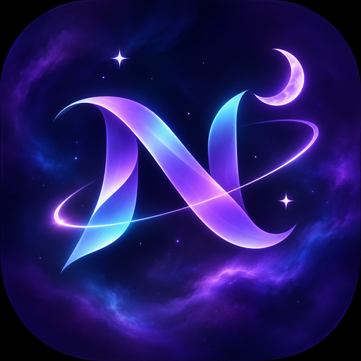

NYMERISDream journal and on-device AI
NYMERIS is a private dream journal. Your dreams are stored on your phone, and the optional AI interpreter runs on your phone too, so dream text is never sent to us or to a server for interpretation.
01 / Inside
Capture a dream while you still remember it, find it again later, and see the patterns over time.
Record
Write a dream with its title and full text, the night it happened, an icon that fits it and how you felt when you woke up. Edit or delete it any time.
Find
Browse every dream newest first, search by any word, or open the calendar to see which nights you recorded.
Discover
See how many dreams you have recorded and which waking moods come up most, calculated from your own entries.
Interpret
NYMERIS Pro downloads an AI model to your phone once. After that, interpretations are generated on the device, even in airplane mode. Each one offers a summary, themes and a question to reflect on.
Keep
Interpretations are saved next to the dream and can be read again without the model, without internet and after a subscription ends.
Languages
The app is in English and Turkish. Dreams written in several other languages can be interpreted and answered in the same language.
02 / Privacy
Dream titles, text, moods and interpretations are stored on your device and are not sent to us. The free version shows ads, and the app uses analytics and crash reporting, which never receive dream content. Interpretations are symbolic and reflective, not predictions or medical advice.
Read the privacy policy